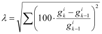

|
|
|


按 ISO 6336-1 附录 E 规定的 KHβ 通用计算方法
- 导入轴文件，选择正确的齿轮组，然后进行初始化。
- 计算轴件并确定接触点的弯曲线和扭转（如果存在均匀载荷分布，沿齿宽确定这些值）
- 考虑来自 Z012 的齿面修正（不是 W010）
- 计算齿接触间隙，然后计算带齿接触刚度的载荷分布，最后计算 KHβ。
- 使用计算得到的载荷分布来修正原始齿轮组的载荷分布。
- 将齿轮组分为“段”，其载荷值在前一步中已定义。
- 使用上一迭代的齿面接触重合度（作为向量）gk-1和当前齿面接触重合度 gk，计算平方误差之和的平方根。

如果 λ>0.1%，返回步骤 2 并进行进一步迭代。否则退出。
该流程严格遵循 ISO 6336-1，附录 E 中描述的方法，但使用了更严格的迭代准则。
English Original
General calculation procedure for KHbeta as specified in ISO 6336-1, Annex E.
- Import the shaft files, select the correct gears, and then perform the initialization
- Calculate the shafts and determine the bending lines and torsion in the point of contact (if uniform load distribution is present, determine these values along the facewidth of the gear)
- Take into account flank modifications from Z012 (not W010)
- Calculate the gaps in the tooth contact, then the load distribution with tooth contact stiffness and finally calculate KHβ.
- Use the calculated load distribution to correct the load distribution on the original gears
- Divide the gears into "sections" whose load values are defined in the previous step
- Use the flank contact ratio (as a vector) from the previous iteration gk-1and the current flank contact ratio gk to calculate the root of the sum of the square error.
If λ>0.1%, go back to step 2 and perform further iterations. Otherwise exit.
This procedure exactly follows the method described in ISO 6336-1, Annex E, but uses a stricter iteration criterion.